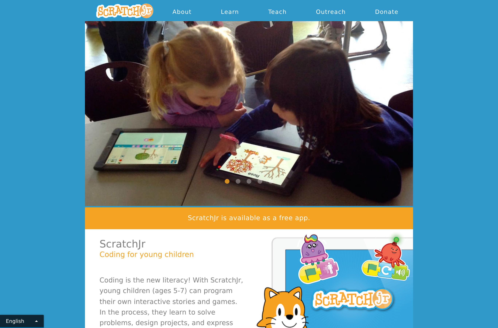

🚀 Lesson 4.3: What Comes After Scratch
You've come the whole way — from "what is this?" to coding, teaching, and sharing. This finale maps the road ahead, whether your child is 5 or 15, so the momentum you've built keeps rolling.
🎯 Learning Objectives
- Know the options for younger kids (ScratchJr) and offline use
- Discover ways to extend Scratch (physical computing, hardware)
- Understand the bridge from blocks to text-based coding
- Leave with a shortlist of trusted next resources
Estimated Time: 25 minutes • The finale! 🎓
In This Lesson
🗺️ The coding road map
There's no single "correct" path — it depends on your child's age and interests. Here's the lay of the land:
(ages 5–7, tablet)"] --> S["Scratch
(ages 8+, you are here)"] S --> P["Physical computing
micro:bit, Makey Makey"] S --> T["Text languages
Python, JavaScript"] S --> D["Deeper Scratch
bigger games, clones, lists"] style J fill:#59C059,color:#fff,stroke:#333 style S fill:#FFAB19,color:#5c3d00,stroke:#333 style P fill:#5CB1D6,color:#fff,stroke:#333 style T fill:#4C97FF,color:#fff,stroke:#333 style D fill:#9966FF,color:#fff,stroke:#333
The key idea: the concepts transfer. Sequences, loops, conditionals, variables, and events exist in every language. Your child already knows them — later tools just change the syntax.
🎓 For younger kids: ScratchJr
If your child is 5–7 (or finds reading in Scratch tough), ScratchJr is the perfect on-ramp. It's a free tablet app where blocks are pictures instead of words — no reading required.

- Picture-based blocks, big and tappable — perfect for little fingers.
- Same core ideas (sequences, events) in a gentler form.
- Free on iPad, Android tablets, and Chromebooks.
- A natural stepping stone up to full Scratch when they're ready.
🎓 Going deeper in Scratch
Your child may spend years in Scratch alone — it has surprising depth. When they're ready for more, point them toward:
🧬 Clones
Spawn many copies of a sprite (bullets, raindrops, enemies) — the key to richer games.
📋 Lists
Store many values (high scores, inventory, quiz questions) — variables' bigger sibling.
🧩 My Blocks
Build custom blocks (functions!) to reuse their own code — real software structure.
🎨 Costumes & the paint editor
Draw original characters and multi-frame animations from scratch.
The official Scratch Ideas page has step-by-step tutorials for all of these.
🎓 Beyond the screen: physical computing
Coding gets extra magical when it moves real things. These pair beautifully with Scratch:
| Tool | What it does | Great for |
|---|---|---|
| Makey Makey | Turns bananas, foil, playdough into keyboard keys | Playful invention, ages 7+ |
| micro:bit | A tiny programmable board with lights & sensors; works with Scratch | Hands-on projects, ages 9+ |
| LEGO robotics | Motors & sensors you program to move | Builders, ages 8+ |
Suddenly code controls the physical world — a huge motivator for kids who love building.
🎓 The bridge to text code
Eventually many kids grow curious about "real" typed code. The transition is smoother than you'd think, because they already own the concepts.
Scratch (blocks)
Python (text)
for i in range(3):
print("Hi!")Same loop, same idea — just typed.
- Good first text languages: Python (friendly and popular), or JavaScript (makes web pages interactive).
- Gentle bridges: tools that show blocks and the equivalent text side-by-side help a lot.
- No rush. Many kids happily stay in Scratch through their early teens. Follow their curiosity, not a timetable.
🔗 Trusted next resources
- Scratch Ideas & Tutorials — official, step-by-step, free.
- Scratch offline app — code without internet (Windows, Mac, ChromeOS, Android).
- ScratchJr — for ages 5–7.
- micro:bit — physical computing that works with Scratch.
- Code.org — free courses across ages, including block-based and beyond.
- Your local library or school often runs free coding clubs — ask around!
💬 Teach It: Keep the momentum
The best "next step" is almost always one more project your child is excited about. Depth of interest beats rushing to the next tool.
- Follow the fire. Loves animation? Do more animation. Loves games? Build the next game. Interest sustains itself.
- Set gentle challenges. "Could you add a second level?" keeps growth happening without pressure.
- Find a community. A coding club, a cousin who codes, or Scratch's own community gives them peers and an audience.
- Celebrate the journey. Look back at their first three-block cat versus what they build now. Growth is a powerful motivator to see.
"Look how far you've come — remember when we made the cat just say hello? Now look what you can build. What do you want to make next?"
💡 And keep being the buddy
Even as they surpass you (they will!), your encouragement, your curiosity, and your "show me what you made" stay just as valuable. You don't need to keep up with the code to keep cheering the coder.
🎯 Quick Check
Question 1: Best fit for a 6-year-old who can't yet read well?
Question 2: Why is moving from Scratch to Python not as scary as it sounds?
Question 3: Best way to keep a child's coding momentum?
Course Complete 🎓
🎉 Key Takeaways
- ScratchJr serves younger kids; the free offline app serves no-internet situations.
- Scratch has depth (clones, lists, custom blocks) and extends to hardware.
- The concepts transfer to text languages like Python — the jump is mostly syntax.
- Momentum comes from interest: one more exciting project beats rushing ahead.
🏆 You did it!
You went from never having coded to learning Scratch, building projects, teaching your child, and guiding them safely into a whole community of young creators. That's an extraordinary gift to give a kid — and yourself.
Now go make something wonderful together. 🐱💛
📚 Revisit anytime
Every lesson stays here for you to return to. Bookmark the parts you'll reference most — the editor tour, the debugging table, the safety checklist.